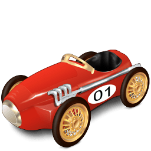

-
2012.12.25 圣诞
华科下起了雪花，我在夜里写代码。
-

2013.01.01 元旦
听到最后一门考试还要在一个月后的消息，有点淡淡的无奈…
管他呢，大气点，我总跟人说，我一般是怨天不尤人的，将一切的不如意放到天上，在我看来比不怨天不尤人更有人情味，哈哈。
就在今天，我决定要单人旅行，去景德镇，去婺源。好像没有原因，也不需要原因吧，走起就好！
对了，新的一年咯，望家人身体健康，这是最想要的。 -

在干什么
如你所视。你正在一辆时光列车上。
列车长litten会用一幅图，一句话，一个idea，一种心情，记录某个特殊的日子。人在原处，只是时光匆匆策马奔来，愿以此静心守志，勿忘本心。
如果你不会使用，我是不会告诉你可以使用方向键的。
旅途愉快。